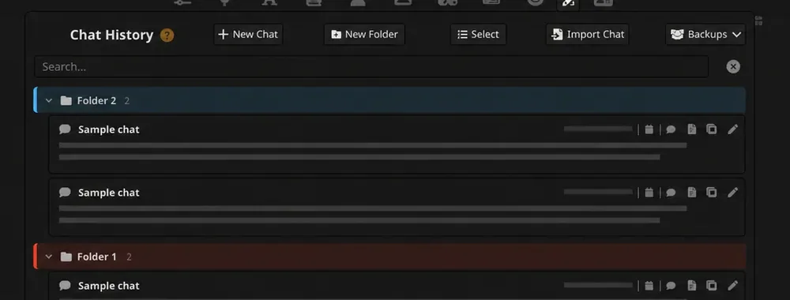

01
Too Many Chats for SillyTavern
My SillyTavern history became difficult to navigate, so I built an extension that groups chats into folders and remembers their state. I shared it with other users who had the same problem; the project is now archived.
- Role
- Independent developer
- Focus
- Interface organization and persistent state